# load packages
library(countdown)
library(tidyverse)
library(glue)
library(lubridate)
library(scales)
library(ggthemes)
library(gt)
library(palmerpenguins)
library(openintro)
library(ggrepel)
# set theme for ggplot2
ggplot2::theme_set(ggplot2::theme_minimal(base_size = 14))
# set width of code output
options(width = 65)
# set figure parameters for knitr
knitr::opts_chunk$set(
fig.width = 7, # 7" width
fig.asp = 0.618, # the golden ratio
fig.retina = 3, # dpi multiplier for displaying HTML output on retina
fig.align = "center", # center align figures
dpi = 300 # higher dpi, sharper image
)Data wrangling - III
Lecture 7
Warm up
Announcements
- Tomorrow in lab: Project proposal peer review
You’ll be assessed on the quality (and participation) of your peer review
Updates based on peer review are due Friday at 5pm
Your proposal will be “graded” after that, by me
- HW 2 is due Thursday
Setup
HW 1 lessons learned
Highlights
Review HW 1 issues, and show us you reviewed them by closing the issue.
DO NOT hard code paths! Use the here package to help with relative paths, if you need.
Checks
Go to your HW 02 repo and make sure all your changes are committed. Then pull. You’ll see there were some updates. Fix merge conflicts, if any. Then push. Check that your document renders.
Warnings and messages
You should suppress package loading and data loading messages with
message: falseas a chunk optionYou should also suppress warnings with
warning: falseafter making sure you’re ok with them, or update your code to eliminate warnings
Missing values I
Is it ok to suppress the following warning? Or should you update your code to eliminate it?
df <- tibble(
x = c(1, 2, 3, NA, 3),
y = c(5, NA, 10, 0, 5)
)ggplot(df, aes(x = x, y = y)) +
geom_point(size = 3)Warning: Removed 2 rows containing missing values
(`geom_point()`).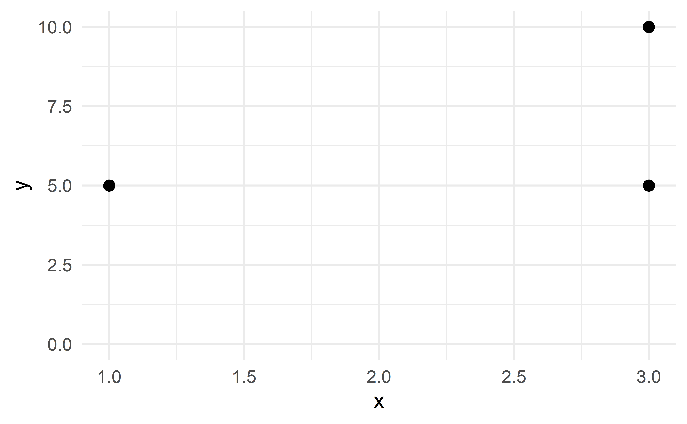
Missing values II
set.seed(1234)
df <- tibble(x = rnorm(100))p <- ggplot(df, aes(x = x)) +
geom_boxplot()
p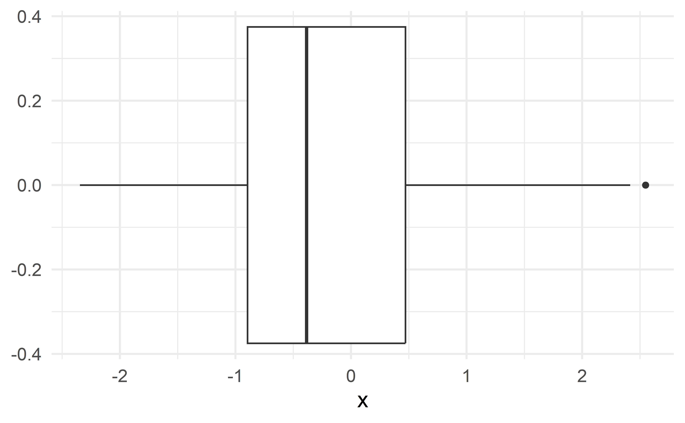
df |>
summarize(med_x = median(x))# A tibble: 1 × 1
med_x
<dbl>
1 -0.385Missing values II
Is it ok to suppress the following warning? Or should you update your code to eliminate it?
p + xlim(0, 2)Warning: Removed 69 rows containing non-finite values
(`stat_boxplot()`).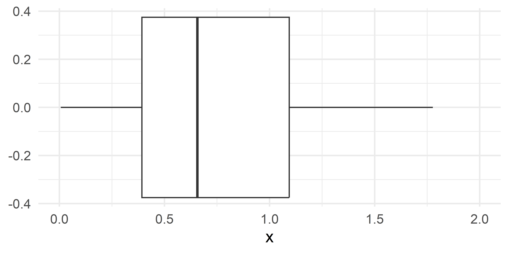
Missing values II
Is it ok to suppress the following warning? Or should you update your code to eliminate it?
p + scale_x_continuous(limits = c(0, 2))Warning: Removed 69 rows containing non-finite values
(`stat_boxplot()`).Missing values II
Why doesn’t the following generate a warning?
p + coord_cartesian(xlim = c(0, 2))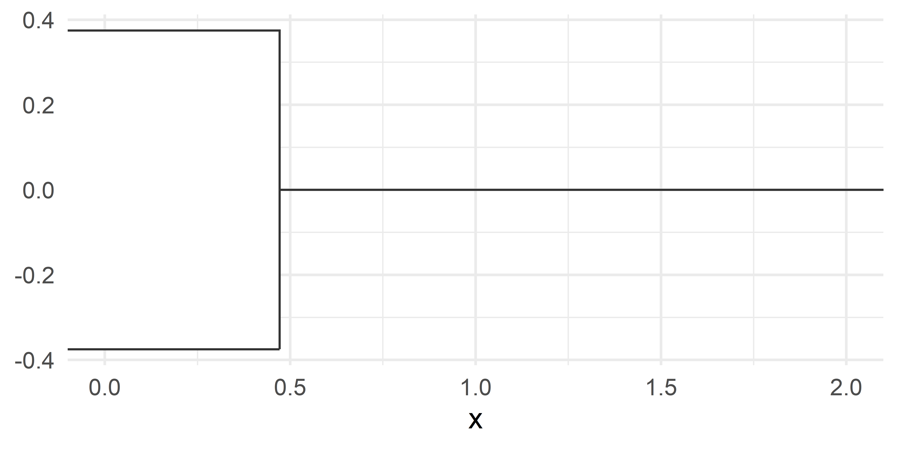
Coordinate systems
Coordinate systems: purpose
- Combine the two position aesthetics (
xandy) to produce a 2d position on the plot:- linear coordinate system: horizontal and vertical coordinates
- polar coordinate system: angle and radius
- maps: latitude and longitude
- Draw axes and panel backgrounds in coordination with the faceter coordinate systems
Coordinate systems: types
- Linear coordinate systems: preserve the shape of geoms
coord_cartesian(): the default Cartesian coordinate system, where the 2d position of an element is given by the combination of the x and y positions.coord_fixed(): Cartesian coordinate system with a fixed aspect ratio. (useful only in limited circumstances)
- Non-linear coordinate systems: can change the shapes – a straight line may no longer be straight. The closest distance between two points may no longer be a straight line.
coord_trans(): Apply arbitrary transformations to x and y positions, after the data has been processed by the statcoord_polar(): Polar coordinatescoord_sf(): Map projections
Setting limits: what the plots say
ggplot(penguins, aes(x = flipper_length_mm, y = body_mass_g, color = species)) +
geom_point() + geom_smooth() +
labs(title = "Plot 1")
ggplot(penguins, aes(x = flipper_length_mm, y = body_mass_g, color = species)) +
geom_point() + geom_smooth() +
scale_x_continuous(limits = c(190, 220)) + scale_y_continuous(limits = c(4000, 5000)) +
labs(title = "Plot 2")
ggplot(penguins, aes(x = flipper_length_mm, y = body_mass_g, color = species)) +
geom_point() + geom_smooth() +
xlim(190, 220) + ylim(4000, 5000) +
labs(title = "Plot 3")
ggplot(penguins, aes(x = flipper_length_mm, y = body_mass_g, color = species)) +
geom_point() + geom_smooth() +
coord_cartesian(xlim = c(190,220), ylim = c(4000, 5000)) +
labs(title = "Plot 4")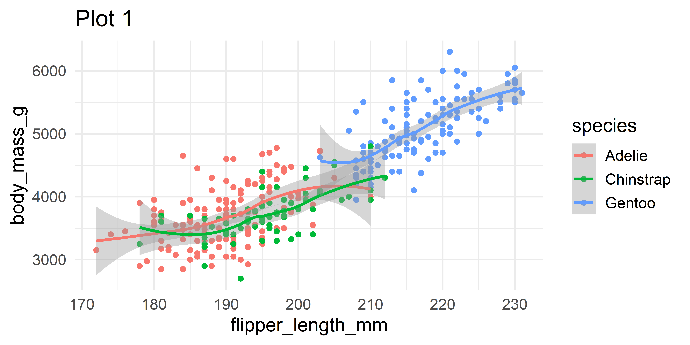


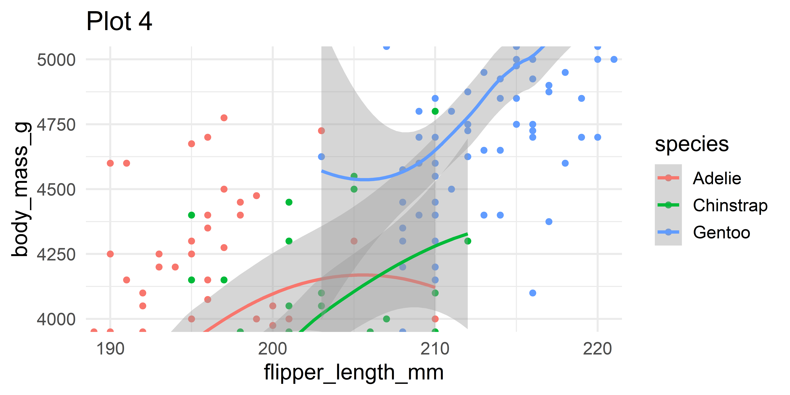
Setting limits: what the warnings say
ggplot(penguins, aes(x = flipper_length_mm, y = body_mass_g, color = species)) +
geom_point() + geom_smooth() +
labs(title = "Plot 1")`geom_smooth()` using method = 'loess' and formula = 'y ~ x'Warning: Removed 2 rows containing non-finite values
(`stat_smooth()`).Warning: Removed 2 rows containing missing values
(`geom_point()`).ggplot(penguins, aes(x = flipper_length_mm, y = body_mass_g, color = species)) +
geom_point() + geom_smooth() +
scale_x_continuous(limits = c(190, 220)) + scale_y_continuous(limits = c(4000, 5000)) +
labs(title = "Plot 2")`geom_smooth()` using method = 'loess' and formula = 'y ~ x'Warning: Removed 235 rows containing non-finite values
(`stat_smooth()`).Warning: Removed 235 rows containing missing values
(`geom_point()`).ggplot(penguins, aes(x = flipper_length_mm, y = body_mass_g, color = species)) +
geom_point() + geom_smooth() +
xlim(190, 220) + ylim(4000, 5000) +
labs(title = "Plot 3")`geom_smooth()` using method = 'loess' and formula = 'y ~ x'Warning: Removed 235 rows containing non-finite values (`stat_smooth()`).
Removed 235 rows containing missing values (`geom_point()`).ggplot(penguins, aes(x = flipper_length_mm, y = body_mass_g, color = species)) +
geom_point() + geom_smooth() +
coord_cartesian(xlim = c(190,220), ylim = c(4000, 5000)) +
labs(title = "Plot 4")`geom_smooth()` using method = 'loess' and formula = 'y ~ x'Warning: Removed 2 rows containing non-finite values
(`stat_smooth()`).Warning: Removed 2 rows containing missing values
(`geom_point()`).Setting limits
- Setting scale limits: Any data outside the limits is thrown away
scale_*_continuous(),xlimandylimargumentsxlim()andylim()
- Setting coordinate system limits: Use all the data, but only display a small region of the plot (zooming in)
coord_cartesian(),xlimandylimarguments
Fixing aspect ratio with coord_fixed()
Useful when having an aspect ratio of 1 makes sense, e.g. scores on two tests (reading and writing) on the same scale (0 to 100 points)
ggplot(hsb2, aes(x = read, y = write)) +
geom_point() + geom_smooth(method = "lm") +
geom_abline(intercept = 0, slope = 1, linetype = "dashed", color = "gray") +
labs(title = "Not fixed")
ggplot(hsb2, aes(x = read, y = write)) +
geom_point() + geom_smooth(method = "lm") +
geom_abline(intercept = 0, slope = 1, linetype = "dashed", color = "gray") +
coord_fixed() +
labs(title = "Fixed")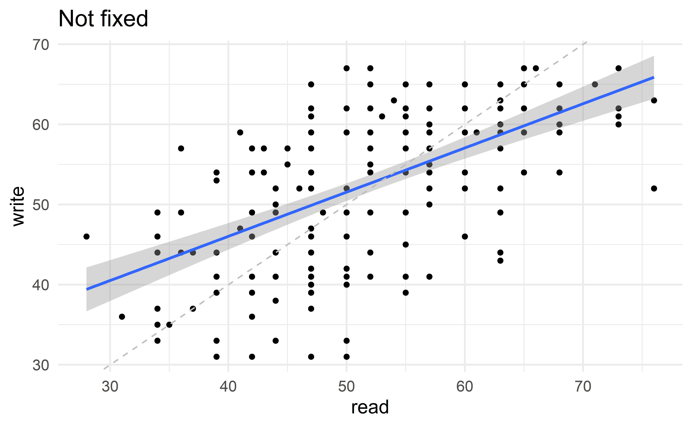
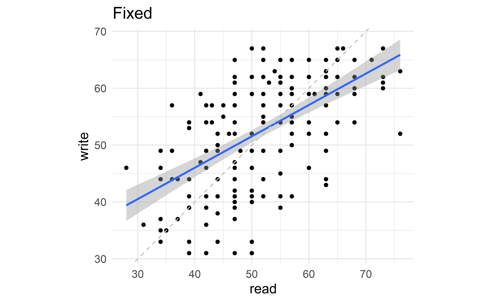
Pie charts and bullseye charts with coord_polar()
ggplot(penguins, aes(x = 1, fill = species)) +
geom_bar() +
labs(title = "Stacked bar chart")
ggplot(penguins, aes(x = 1, fill = species)) +
geom_bar() +
coord_polar(theta = "y") +
labs(title = "Pie chart")
ggplot(penguins, aes(x = 1, fill = species)) +
geom_bar() +
coord_polar(theta = "x") +
labs(title = "Bullseye chart")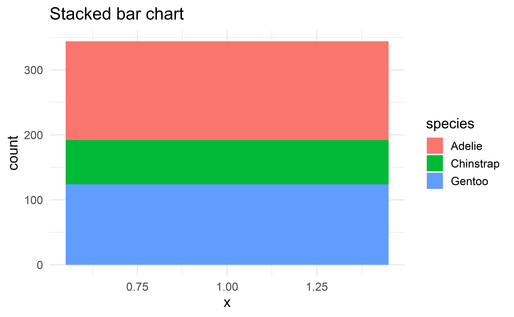

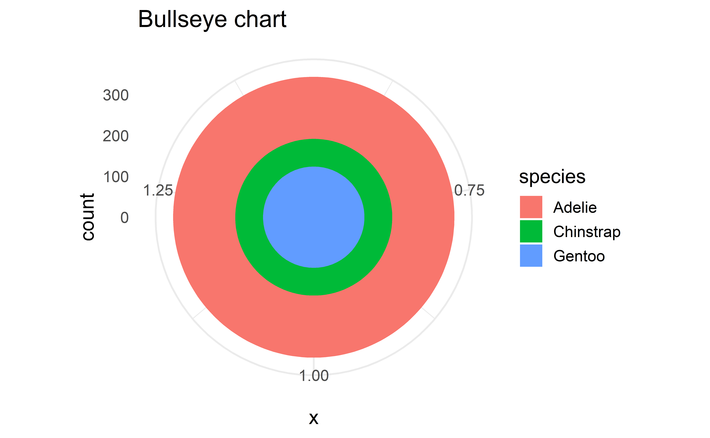
aside: about pie charts…
Pie charts
What do you know about pie charts and data visualization best practices? Love ’em or lose ’em?
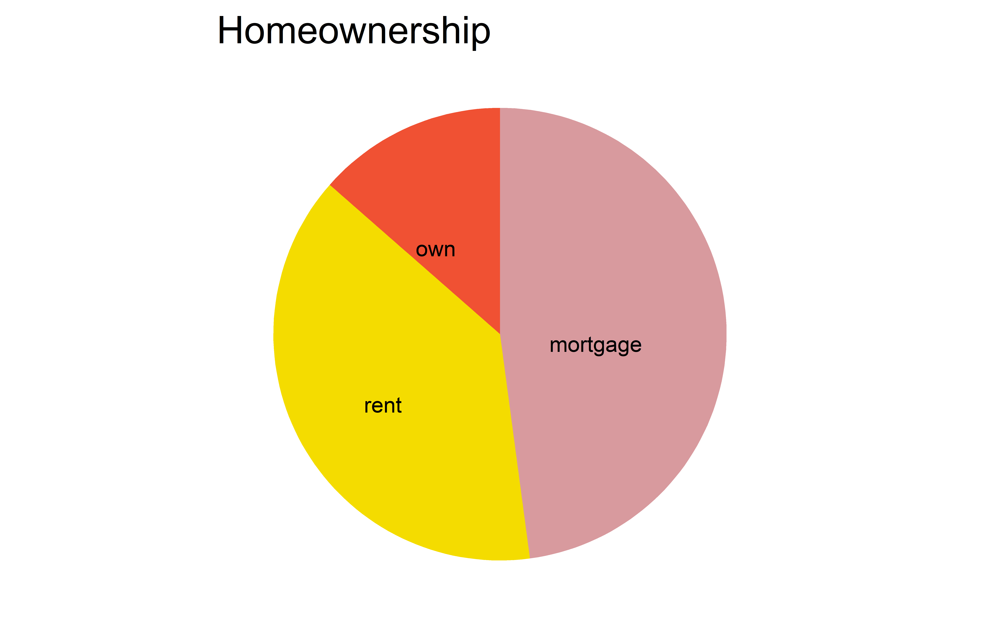
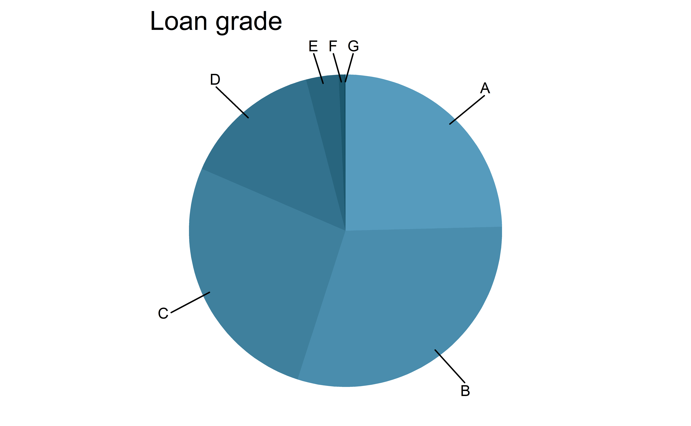
Pie charts: when to love ’em, when to lose ’em
For categorical variables with few levels, bar charts can work well
pie_homeownership
loans %>%
ggplot(aes(x = homeownership, fill = homeownership)) +
geom_bar(show.legend = FALSE) +
scale_fill_openintro("hot") +
labs(x = "Homeownership", y = "Count")
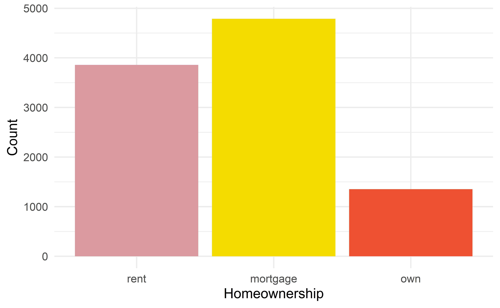
Pie charts: when to love ’em, when to lose ’em
For categorical variables with many levels, bar charts are difficult to read
pie_loan_grades
loans |>
ggplot(aes(x = grade, fill = grade)) +
geom_bar(show.legend = FALSE) +
scale_fill_openintro("cool") +
labs(x = "Loan grade", y = "Count")
Bringing together multiple data frames
Scenario 2
We…
have multiple data frames
want to want to bring them together so we can plot them
professions <- read_csv("data/professions.csv")
dates <- read_csv("data/dates.csv")
works <- read_csv("data/works.csv")10 women in science who changed the world
| name |
|---|
| Ada Lovelace |
| Marie Curie |
| Janaki Ammal |
| Chien-Shiung Wu |
| Katherine Johnson |
| Rosalind Franklin |
| Vera Rubin |
| Gladys West |
| Flossie Wong-Staal |
| Jennifer Doudna |
Source: Discover Magazine
Inputs
professions# A tibble: 10 × 2
name profession
<chr> <chr>
1 Ada Lovelace Mathematician
2 Marie Curie Physicist and Chemist
3 Janaki Ammal Botanist
4 Chien-Shiung Wu Physicist
5 Katherine Johnson Mathematician
6 Rosalind Franklin Chemist
7 Vera Rubin Astronomer
8 Gladys West Mathematician
9 Flossie Wong-Staal Virologist and Molecular Biologist
10 Jennifer Doudna Biochemist dates# A tibble: 8 × 3
name birth_year death_year
<chr> <dbl> <dbl>
1 Janaki Ammal 1897 1984
2 Chien-Shiung Wu 1912 1997
3 Katherine Johnson 1918 2020
4 Rosalind Franklin 1920 1958
5 Vera Rubin 1928 2016
6 Gladys West 1930 NA
7 Flossie Wong-Staal 1947 NA
8 Jennifer Doudna 1964 NAworks# A tibble: 9 × 2
name known_for
<chr> <chr>
1 Ada Lovelace first computer algorithm
2 Marie Curie theory of radioactivity, first woman Nobel…
3 Janaki Ammal hybrid species, biodiversity protection
4 Chien-Shiung Wu experiment overturning theory of parity
5 Katherine Johnson orbital mechanics critical to sending first…
6 Vera Rubin existence of dark matter
7 Gladys West mathematical modeling of the shape of the E…
8 Flossie Wong-Staal first to clone HIV and map its genes, which…
9 Jennifer Doudna one of the primary developers of CRISPR Desired output
# A tibble: 10 × 5
name profession birth…¹ death…² known…³
<chr> <chr> <dbl> <dbl> <chr>
1 Ada Lovelace Mathematician NA NA first …
2 Marie Curie Physicist and Chem… NA NA theory…
3 Janaki Ammal Botanist 1897 1984 hybrid…
4 Chien-Shiung Wu Physicist 1912 1997 experi…
5 Katherine Johnson Mathematician 1918 2020 orbita…
6 Rosalind Franklin Chemist 1920 1958 <NA>
7 Vera Rubin Astronomer 1928 2016 existe…
8 Gladys West Mathematician 1930 NA mathem…
9 Flossie Wong-Staal Virologist and Mol… 1947 NA first …
10 Jennifer Doudna Biochemist 1964 NA one of…
# … with abbreviated variable names ¹birth_year, ²death_year,
# ³known_forInputs, reminder
names(professions)[1] "name" "profession"names(dates)[1] "name" "birth_year" "death_year"names(works)[1] "name" "known_for"nrow(professions)[1] 10nrow(dates)[1] 8nrow(works)[1] 9Joining data frames
something_join(x, y)left_join(): all rows from xright_join(): all rows from yfull_join(): all rows from both x and ysemi_join(): all rows from x where there are matching values in y, keeping just columns from xinner_join(): all rows from x where there are matching values in y, return all combination of multiple matches in the case of multiple matchesanti_join(): return all rows from x where there are not matching values in y, never duplicate rows of x- …
Setup
For the next few slides…
x <- tibble(
id = c(1, 2, 3),
value_x = c("x1", "x2", "x3")
)
x# A tibble: 3 × 2
id value_x
<dbl> <chr>
1 1 x1
2 2 x2
3 3 x3 y <- tibble(
id = c(1, 2, 4),
value_y = c("y1", "y2", "y4")
)
y# A tibble: 3 × 2
id value_y
<dbl> <chr>
1 1 y1
2 2 y2
3 4 y4 left_join()

left_join(x, y)Joining, by = "id"# A tibble: 3 × 3
id value_x value_y
<dbl> <chr> <chr>
1 1 x1 y1
2 2 x2 y2
3 3 x3 <NA> left_join()
professions |>
left_join(dates)Joining, by = "name"# A tibble: 10 × 4
name profession birth…¹ death…²
<chr> <chr> <dbl> <dbl>
1 Ada Lovelace Mathematician NA NA
2 Marie Curie Physicist and Chemist NA NA
3 Janaki Ammal Botanist 1897 1984
4 Chien-Shiung Wu Physicist 1912 1997
5 Katherine Johnson Mathematician 1918 2020
6 Rosalind Franklin Chemist 1920 1958
7 Vera Rubin Astronomer 1928 2016
8 Gladys West Mathematician 1930 NA
9 Flossie Wong-Staal Virologist and Molecular B… 1947 NA
10 Jennifer Doudna Biochemist 1964 NA
# … with abbreviated variable names ¹birth_year, ²death_yearright_join()

right_join(x, y)Joining, by = "id"# A tibble: 3 × 3
id value_x value_y
<dbl> <chr> <chr>
1 1 x1 y1
2 2 x2 y2
3 4 <NA> y4 right_join()
professions |>
right_join(dates)Joining, by = "name"# A tibble: 8 × 4
name profession birth…¹ death…²
<chr> <chr> <dbl> <dbl>
1 Janaki Ammal Botanist 1897 1984
2 Chien-Shiung Wu Physicist 1912 1997
3 Katherine Johnson Mathematician 1918 2020
4 Rosalind Franklin Chemist 1920 1958
5 Vera Rubin Astronomer 1928 2016
6 Gladys West Mathematician 1930 NA
7 Flossie Wong-Staal Virologist and Molecular Bi… 1947 NA
8 Jennifer Doudna Biochemist 1964 NA
# … with abbreviated variable names ¹birth_year, ²death_yearfull_join()

full_join(x, y)Joining, by = "id"# A tibble: 4 × 3
id value_x value_y
<dbl> <chr> <chr>
1 1 x1 y1
2 2 x2 y2
3 3 x3 <NA>
4 4 <NA> y4 full_join()
dates |>
full_join(works)Joining, by = "name"# A tibble: 10 × 4
name birth_year death_year known_for
<chr> <dbl> <dbl> <chr>
1 Janaki Ammal 1897 1984 hybrid species, biod…
2 Chien-Shiung Wu 1912 1997 experiment overturni…
3 Katherine Johnson 1918 2020 orbital mechanics cr…
4 Rosalind Franklin 1920 1958 <NA>
5 Vera Rubin 1928 2016 existence of dark ma…
6 Gladys West 1930 NA mathematical modelin…
7 Flossie Wong-Staal 1947 NA first to clone HIV a…
8 Jennifer Doudna 1964 NA one of the primary d…
9 Ada Lovelace NA NA first computer algor…
10 Marie Curie NA NA theory of radioactiv…inner_join()

inner_join(x, y)Joining, by = "id"# A tibble: 2 × 3
id value_x value_y
<dbl> <chr> <chr>
1 1 x1 y1
2 2 x2 y2 inner_join()
dates |>
inner_join(works)Joining, by = "name"# A tibble: 7 × 4
name birth_year death_year known_for
<chr> <dbl> <dbl> <chr>
1 Janaki Ammal 1897 1984 hybrid species, biodi…
2 Chien-Shiung Wu 1912 1997 experiment overturnin…
3 Katherine Johnson 1918 2020 orbital mechanics cri…
4 Vera Rubin 1928 2016 existence of dark mat…
5 Gladys West 1930 NA mathematical modeling…
6 Flossie Wong-Staal 1947 NA first to clone HIV an…
7 Jennifer Doudna 1964 NA one of the primary de…semi_join()

semi_join(x, y)Joining, by = "id"# A tibble: 2 × 2
id value_x
<dbl> <chr>
1 1 x1
2 2 x2 semi_join()
dates |>
semi_join(works)Joining, by = "name"# A tibble: 7 × 3
name birth_year death_year
<chr> <dbl> <dbl>
1 Janaki Ammal 1897 1984
2 Chien-Shiung Wu 1912 1997
3 Katherine Johnson 1918 2020
4 Vera Rubin 1928 2016
5 Gladys West 1930 NA
6 Flossie Wong-Staal 1947 NA
7 Jennifer Doudna 1964 NAanti_join()

anti_join(x, y)Joining, by = "id"# A tibble: 1 × 2
id value_x
<dbl> <chr>
1 3 x3 anti_join()
dates |>
anti_join(works)Joining, by = "name"# A tibble: 1 × 3
name birth_year death_year
<chr> <dbl> <dbl>
1 Rosalind Franklin 1920 1958Putting it altogether
scientists <- professions |>
left_join(dates) |>
left_join(works)Joining, by = "name"
Joining, by = "name"scientists# A tibble: 10 × 5
name profession birth…¹ death…² known…³
<chr> <chr> <dbl> <dbl> <chr>
1 Ada Lovelace Mathematician NA NA first …
2 Marie Curie Physicist and Chem… NA NA theory…
3 Janaki Ammal Botanist 1897 1984 hybrid…
4 Chien-Shiung Wu Physicist 1912 1997 experi…
5 Katherine Johnson Mathematician 1918 2020 orbita…
6 Rosalind Franklin Chemist 1920 1958 <NA>
7 Vera Rubin Astronomer 1928 2016 existe…
8 Gladys West Mathematician 1930 NA mathem…
9 Flossie Wong-Staal Virologist and Mol… 1947 NA first …
10 Jennifer Doudna Biochemist 1964 NA one of…
# … with abbreviated variable names ¹birth_year, ²death_year,
# ³known_for*_join() functions
- From dplyr
- Incredibly useful for bringing datasets with common information (e.g., unique identifier) together
- Use
byargument when the names of the column containing the common information are not the same across datasets - Always check that the numbers of rows and columns of the result dataset makes sense
- Refer to two-table verbs vignette when needed
Visualizing joined data

But first…
What is the plot in the previous slide called?
Livecoding
Reveal below for code developed during live coding session.
- Transform
Code
scientists_longer <- scientists |>
mutate(
birth_year = case_when(
name == "Ada Lovelace" ~ 1815,
name == "Marie Curie" ~ 1867,
TRUE ~ birth_year
),
death_year = case_when(
name == "Ada Lovelace" ~ 1852,
name == "Marie Curie" ~ 1934,
name == "Flossie Wong-Staal" ~ 2020,
TRUE ~ death_year
),
status = if_else(is.na(death_year), "alive", "deceased"),
death_year = if_else(is.na(death_year), 2021, death_year),
known_for = if_else(name == "Rosalind Franklin", "understanding of the molecular structures of DNA ", known_for)
) |>
pivot_longer(
cols = contains("year"),
names_to = "year_type",
values_to = "year"
) |>
mutate(death_year_fake = if_else(year == 2021, TRUE, FALSE))- Plot
Code
ggplot(scientists_longer,
aes(x = year, y = fct_reorder(name, as.numeric(factor(profession))), group = name, color = profession)) +
geom_point(aes(shape = death_year_fake), show.legend = FALSE) +
geom_line(aes(linetype = status), show.legend = FALSE) +
scale_shape_manual(values = c("circle", NA)) +
scale_linetype_manual(values = c("dashed", "solid")) +
scale_color_colorblind() +
scale_x_continuous(expand = c(0.01, 0), breaks = seq(1820, 2020, 50)) +
geom_text(aes(y = name, label = known_for), x = 2030, show.legend = FALSE, hjust = 0) +
geom_text(aes(label = profession), x = 1809, y = Inf, hjust = 1, vjust = 1, show.legend = FALSE) +
coord_cartesian(clip = "off") +
labs(
x = "Year", y = NULL,
title = "10 women in science who changed the world",
caption = "Source: Discover magazine"
) +
facet_grid(profession ~ ., scales = "free_y", space = "free_y", switch = "x") +
theme(
plot.margin = unit(c(1, 23, 1, 4), "lines"),
plot.title.position = "plot",
plot.caption.position = "plot",
plot.caption = element_text(hjust = 2), # manual hack
strip.background = element_blank(),
strip.text = element_blank(),
axis.title.x = element_text(hjust = 0),
panel.background = element_rect(fill = "#f0f0f0", color = "white"),
panel.grid.major = element_line(color = "white", size = 0.5)
)